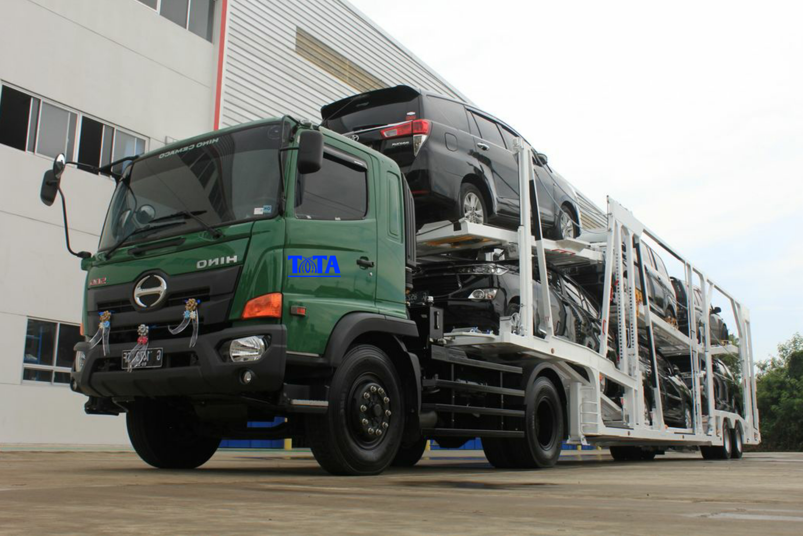

Welcome to Tata Trucking Service
ditulis oleh Lilo Hergita pada 22 Juni 2020.
Seiring dengan berkembangnya zaman, jasa pengiriman menjadi salah satu hal penting di dalam kehidupan yang maju ini. Salah satu manfaat yang terasa dari jasa pengiriman ialah adanya jual beli online yang sungguh-sungguh mengandalkan jasa pengiriman. Untuk lebih jelasnya, tentunya bagi anda yang sudah menjalankan transaksi jual beli sangat mengerti dengan jasa pengiriman barang ini.
Adanya jasa pengiriman barang ini memungkinkan siapapun untuk bisa bertransaksi tanpa batas waktu ataupun tempat. Jika pada jaman dulu, transaksi harus memutuskan bahwa penjual, pembeli, dan barang yang dipasarkan berjumpa dalam satu lokasi. Dengan adanya jasa pengiriman barang terpercaya ini, tidak seharusnya seperti itu. Pembeli maupun penjual dapat menjalankan transaksi sekalipun terpisah oleh jarak dan waktu. Semakin ke sini jasa pengiriman barang sangat banyak, termasuk jasa pengiriman mobil, motor serta jasa pengiriman alat berat.
Ada cukup banyak perusahaan pengiriman jasa tersebut yang bisa anda peroleh dan salah satunya ialah Tata Trucking Service. Perusahaan kami adalah perusahaan yang bergerak dalam bidang pengiriman barang, yang khusus spesialisasinya ialah pengiriman barang kendaraan mobil, dan motor bagi perorangan (dalam jumlah sedikit) hingga perusahaan otomotif (dalam jumlah banyak).
Tata Trucking Service memungkinkan siapa saja untuk mengirimkan barang kendaraannya ke seluruh kawasan di Indonesia. Kemanapun lokasi anda, dari Sabang hingga Merauke kami siap menjadi pelayanan yang terpercaya dan bermutu untuk pengiriman barang ke semua Indonesia.